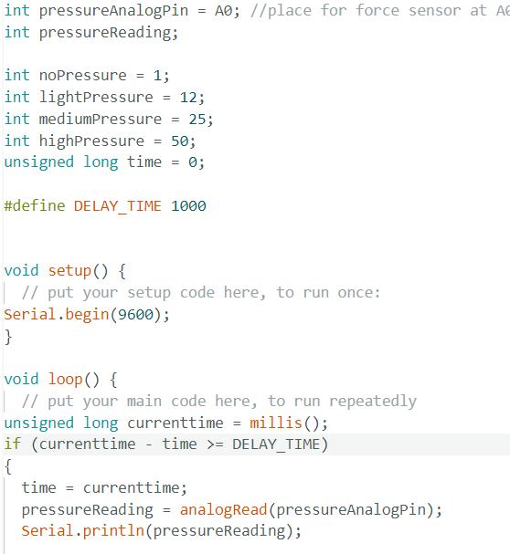

<!DOCTYPE html>
<html lang="en">
<html>

<head>
<style>
.p1 {
  font-family: "Times New Roman", Times, serif;
}

.p2 {
  font-family: Arial, Helvetica, sans-serif;
}

.p3 {
  font-family: "Lucida Console", "Courier New", monospace;
}
</style>
</head>

<body>

</body>
</html>


<title>PS70: Intro to Digital Fabrication </title>
<link href="https://cdn.jsdelivr.net/npm/bootstrap@5.1.1/dist/css/bootstrap.min.css" rel="stylesheet">
<link href="../style.css" rel="stylesheet">

<nav class="navbar navbar-expand-sm navbar-light bg-light">
  <div style="align-items: left; justify-content:left;" class="container-fluid">
    <h3 class="nav-title"> PS70: Intro to Digital Fabrication</h3>
    <div class="navbar-nav">
      <h4></h4>
      <h4><a class="nav-link" href="../index.html">Home</a></h4>
      <h4><a class="nav-link" href="../about.html">About Me</a></h4>
    </div>
  </div>
</nav>

<body>


<xmp style="display:none;">
<br> 
<p class="p3">

  <head>
<style>
body {
  background-color: #f0edfa;
}
</style>
</head>
<body>

 <b> Week 6: Inputs </b> <br>

I am rethinking my final project - well, just the electronic portions of it (still want to make a press) - wondering if I can do something with pressure - possibly measuring the amount of pressure the roller puts on the items on the press bed, and being able to adjust the press bed (lower/raise it)? Anyways, this week I tested out Arduino pressure sensors with homemade force sense resistors using velostat, copper tape, paper (successful) and matboard (not even close to successful). <br>

I spent a couple days with two main objectives: making a couple different versions of force sense resistors, and continuing to learn coding/understand C++ (I've been watching a lot of YouTube videos). The code I used for this project was taken from: 
 <a href="https://arduinogetstarted.com/tutorials/arduino-force-sensor"> Arduinogetstarted.com</a>, with some edits made, including using millis() instead of delay() (Also I was not a fan of the constant pressure read out labels - editing the code so it outputted the numbers only made more sense to me and was easier to work with) <br>

  <br>

First I was trying to make my own force sense resistor using matboard, thinner foam, and velostat. After reading up more on the velostat, I realized my mistake with sandwiching the velostat inbetween two basically impossible to bend/manipulate slabs of matboard. <br>

<br> Then I came across <a href="https://embelashed.org/paper/sensors/pressure.html"> embelashed's</a> paper sensor... <br>

 <br>

 <br>

The below graphs were me trying to test how much force I could exert on the sensor using one hand for 15 second intervals. The sensor only sensed pressure when both sides were pressed down - if I tried to press down on only one side, it would read as very low or not at all (this crushed my idea of getting my cats to sit on it - one of my cats is 16 pounds, so I was super excited) I expected the left hand (top graph) to exert more pressure since that's my dominant hand, but it makes sense that it'd be lower since I use it almost exclusively. 

 <br>

 <br> 

I also convinced my partner to try out the sensor (she is, understandably, wary of my circuitry abilities) and she immediately spiked it at 33 with just one hand, so the sensor can pick up different pressures. If I pressed down on the sensor with both hands, I could go up to 35 at most. 
<br>

</p>

</xmp>
</body>

<script src="../strapdown.js"></script>
<script src="https://cdn.jsdelivr.net/npm/bootstrap@5.0.2/dist/js/bootstrap.bundle.min.js" ></script>

</html>